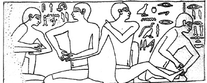

ŞEKİL 86. Manikür-pedikür
(Sakkara’daki Chentika-Mezarı’ndan 6. Hanedan dönemi,
İÖ 2345-2198).162
Eski Doğu’da ve Yunan’da insanlar her fırsatta (alışılmış sabah tuvaletinde, banyodan sonra, her şölende, tıbbî amaçlarla) bedenlerini kokulu yağlarla yağlarlardı. Tanrı heykelleri ve cesetler bile yağlanıyordu. Erkekler, tuvalet ve güzellik malzemeleri kullanmada kadınlarla yarışıyorlardı. Saç, kaş ve kirpik dökülmelerine karşı saç yağları ve pomatlar; kaş ve kirpiklerin beslenmesi ve koyulaştırılması için araçlar; saçları sarı ya da kırmızıya boyama; saçlara ondüle yapmak ve hattâ kimi bölgelerde kıl dökmek için çeşitli malzemeler; cilde canlı bir renk vermek, elleri bembeyaz tutmak, güneşin ciltte oluşturduğu çilleri uzaklaştırmak, cilt kırışıklıklarını gidermek için çeşitli malzemelerin kullanımı yaygındı.
Kozmetik bilgisi Mısır’dan yola çıkıp Akdeniz üzerinden Roma’ya ulaşmış ve burada Geç İmparatorluk döneminde çok yüksek düzeye erişmiştir. Bu sıralarda meme başları yaldızlanıyor, diz ve dirseklere allıklar sürülüyor, erkekler kollarındaki damarları erkeklik etkisini yükseltmek için mavi boya ile boyuyorlardı.
Helenistik dönemde eczacılık ile kozmetik arasında ilişki vardı. “Tıbbın babası” Kos’lu Hippokrates kozmetikle ilgili kimi reçeteler de vermiştir. Buna göre yüzün güzel görünmesi için bir kertenkelenin karaciğeri, zeytinyağı ile ezildikten sonra su katılmamış şarapla birlikte yüze sürülmeliydi. Saç dökülmesinde ise laden çalısı, gül merhemi ve zambak merhemi ile birlikte ezilmeli ve baş derisine sürülmeliydi. Bergama’lı Galenos’un serinlik verici ünlü merhemi (“unguentum refrigerans”), yüzde 12,5 balmumu, yüzde 50 zeytinyağı ve yüzde 37,5 gülsuyundan ibaretti. Bu merhem, kuru ciltlere karşı ve özellikle de yüzdeki yaşlılık çizgilerini yumuşattığı için Romalı kadınlar tarafından son derece tutuluyordu.159
Parfüm tarihindeki en popüler kişi, Eski Mısır’lı ünlü kraliçe VII. Kleopatra (İÖ 69-30) ya da aynı dönemde yaşamış kadın simyacı Kleopatra’dır (etk. İÖ 50’ler). Her iki Kleopatra’nın da parfüm ve kozmetik malzeme yapma ve kullanmadaki ustalığı çok ünlüdür. İmparator Marcus Antonius’un (İÖ 83-30) ölümünden 100 yıl kadar sonra bir Yunanlı, biyografyasında Kraliçe Kleopatra’nın koku kullanım ustalığını övmüştür. Cildini güzelleştirmek için eşek sütü içinde banyo yaptığı söylenir. Kleopatra’nın, İmparator Gaius Iulius Caesar’ı (Jul Sezar) (İÖ 101-44) ve Marcus Antonius’u baştan çıkarırken kullandığı “metapion” adlı parfüm, sonraları Mısır’ın ihraç ürünleri arasında yer almıştır. William Shakespeare (1564-1616), Kraliçe Kleopatra için unutulmaz dizeler yazmıştır. Spekülasyona ve tartışmaya açık bir şekilde Kleopatra’nın parfüm dünyasında ün kazanmasında Shakespeare’in önemli etkisi olmuştur. Gerçekte ise ilk kozmetik ve parfüm ustası, Kleopatra’dan çok önce yaşamış olan Firavun IV. Amenophis’in (“Akhenaton”) (yön. İÖ 1353-1336) karısı Kraliçe Nefertiti’dir. Döneminin en güçlü kadınlarından biri olan Nefertiti, yetki açısından firavun kocası ile aynı düzeyde bulunuyordu.
Kleopatra dönemi Mısır’ında varlıklı kadınlar göz kapaklarına sürme (kurşun parlağı ile demir- ve bakır-oksitleri karışımı), kahverengi okr, malakit yeşili ve krizokola (mavi renkli bir bakır cevheri) ile boyuyorlardı. Memfis ve Teb kenti pazarında is karası ile mavimsi renkteki kilden hazırlanan sürme çok talep ediliyordu. Saç boyamada kına kullanılıyordu ve Kraliçe Kleopatra’nın kumral renkli bukleli saçları ünlüydü. O zamandan beri de kına, Doğu ülkelerinde avuç içleri, ayak tabanları, tırnaklar ve kulak memelerinin boyanmasında kullanılmıştır.163
Mısırlıların parfüm sanatındaki bilgileri İbranilere, Asurlulara, Babillilere, Keldanilere, Perslere ve sonunda Yunanlılara geçmiştir. Her uygarlık da kendi doğal kaynaklarından hazırladığı hammaddeleri katarak parfüm çeşitlerini zenginleştirmiştir. Bu eski uygarlıklarda koku kullanımı, erkekler arasında da kadınlardaki kadar yaygındı. Herodotos, Asurluların koku kullandıklarını, selvi, sedir, alyasemin gibi ağaçların parçalarını belli bir kıvama gelinceye kadar suda ezerek hazırladıkları karışımı bedenlerine ve yüzlerine sürdüklerini yazmıştır. Bu dönemlerde Ninova ve Babil, Doğu kokularının ticaret merkezi olmuştu. İÖ 1800’lerden kalma Babil kil tabletlerinde, sedir, mürrüsâfi ve selvi yağlarının alımıyla ilgili kayıtlar bulunmuştur. Babil Kralı II. Nabukadnezar’ın (İÖ 605-562), karısı ve Med kralının kızı Kraliçe Amyitis için yaptırdığı Babil’in asmabahçelerinde Amyitis’in kokusunu çok sevdiği gül ve zambağın yanı sıra birçok güzel kokulu çiçek ve otların yetiştirildiği bilinmektedir. Asurlular ve Babilliler, hastalık cinlerini bedenden kovmak için hastaya akgünlük ya da mür dumanı koklatırlardı.
Bitkilerden suyla ekstraksiyon yoluyla koku maddelerinin ve bitkisel ilaçların kazanılması, insanlığın en eski tekniklerinden biridir. Mezopotamya’da yapılan kazılarda İÖ 3500 yıllarına tarihlenen özütleme (ekstraksiyon, belirli bir bileşeni bir malzeme içinden çözerek çekme) kapları ve İÖ 2100 yıllarına tarihlenen ve özütleme yoluyla ilaç maddesi elde edilmesini betimleyen Sümer kil tabletleri bulunmuştur.
İÖ 1200’lerde tüm Mezopotamya’ya egemen olan Asurlular zamanında parfüm üretiminde özütleme süreci gündeme gelmiştir. Parfüm olarak katı ve sıvı yağ temelinde güzel kokulu madde karışımları, ayrıca da merhemler ve kremler anlaşılıyordu ve parfüm metinlerinin yazarları, kadınlardı.
Mezopotamya’da sıvı yağ için en önemli kaynak, susam tohumları idi; zeytincilik orada gelişmemişti. Susam tohumları, ağırlığının üçte biri kadar yağ içeriyor, yemeklik yağ olarak ve tercihen de günümüze kadar kullanıldığı üzere, merhemler için başlangıç maddesi olarak kullanılıyordu. Susam yağı (şırlağan yağı) elde edilmesi için mekanik ve özütsel yöntemler vardı. Yakındoğu’nun bitki çeşitliliği, dışarıdan satın almaya gerek kalmayacak şekilde güzel kokulu sular ve merhem yağları için büyük bir çeşitliliğe olanak tanıyordu.
Musevîlerin, parfüm bilgisini “Mısır’dan Çıkış” (“Exodus”) döneminde edindiklerinin ve bilgilerini artırdıklarının kanıtları, Kitab-ı Mukaddes’te vardır. Bir söylenceye göre de Judith, İbrani ülkesini kurtarmak için Nabukadnezar’ın generali Holofernes’i güzel kokulardan yararlanarak baştan çıkarmış, sonra da öldürmüştür.
Eski Mısır’da İÖ 2. binyılın sonundan itibaren rahipler, hazırladıkları kokulu preparatları üst düzey kişilere satar oldular. Mısır’lı kadınlar bedenlerinin çeşitli kısımları için farklı merhem ve esanslar kullanıyorlardı. Kral I. Amenophis (yön. İÖ 1514-1493) zamanına ait Ebers Papirüsü’ndeki reçetelere göre ağızdaki kötü kokuları gidermede mür, günlük, ardıç meyvesi, servi, mastik sakızı, keçiboynuzu, Kuzey Suriye’den eyirotu, “Styrax” ve kuru üzümden oluşan bir karışım kullanılıyordu.164
Ebers Papirüsü‘nde Mısır kültür çevresine ilişkin olarak özütleme üzerine ilk kanıtlar yer almaktadır. Burada katı ve sıvı yağların yanı sıra bira ve şarap gibi alkollü çözücüler de ilk kez dile getirilmiştir.165
En eski parfüm örneklerinden biri ve Mısır’ın en eski parfümü, aynı zamanda kutsal bir koku olan “kyphi”dir. Yunan biyografyacı Plutarkhos (~46-120), “kyphi”nin Eski Mısırlıların icadı olduğunu, tütsü olarak yakılmak için mür, günlük, kına, tarçın, ardıç, hintsümbülü, safran, bal, üzüm gibi on altı çeşit bitki ve reçine karışımının uzun süre şarapta bekletilip macun haline getirildikten sonra kurutularak tütsü çubuğu halinde hazırlandığını ve bu parfümün zihin yorgunluğunu kaldırdığını, düşleri aydınlık kıldığını ve ruhu canlandırdığını yazmıştır. Buna ilişkin reçetelerden en eskilerinden birine göre, başkaca bileşenlerin yanı sıra hintkamışı, kına, hintsümbülü, günlük, mür, tarçın, selvi ve terementi (antepfıstığı reçinesi) içeren keskin kokulu bir karışımdı. Bu bitkiler ve sakız, öğütülüp balla karıştırıldıktan sonra küp şeklinde tütsüler halinde hazırlanmaktaydı. Kadınlar “kyphi”yi, cinsel organlarını parfümlemede de kullanıyorlardı. “Güneş Kenti” Heliopolis’te, güneş tanrısı Ra için güneş doğarken reçineler, öğleyin mür, günbatımında ise 16 çeşit güzel kokulu madde karışımından oluşan “kyphi” yakılırdı. Eski Mısır’ın bu en ünlü parfümünün, yatıştırıcı, kuruntuyu yatıştırıcı, rüyayı artırıcı, keder giderici, astmayı (astım) tedavi edici, hipnoza yol açıcı ve zehirlere karşı genel panzehir olduğu söylenmekteydi.5 Mısırlılar kokulu maddeleri zeytinyağında uzun süre bekleterek yağı kokulandırmışlar, kalıcı kokular hazırlamışlardır. Koku çeşitlerini zenginleştirebilmek için başka yerlerden bitki, ağaç ve hayvan kaynaklı kokulu hammaddeler getirtmişler; mür, kasnı otu, Çin tarçını, kakule, sedir ağacı, Çin sümbülü, aselbent sakızı, laden çiçeği, günlük, amber, misk, portakal ve portakal çiçeği gibi bitkilerden yararlanmışlardır.
Mısır’dan bağımsız olarak Doğu ve Güneydoğu Asya’da İÖ 2300’lerde parfüm kullanımı başlamıştır. Avrupa’nın büyük bir kısmında uygarlaşmamış halklar bulunurken, Ortaçağ başlarında Çin’de 7. yüzyıldan beri parlak bir ticaret ağı kurulmuştu. İÖ 2. yüzyılda kurulan en önemli ticaret yolu olan İpek Yolu, Çin’in kültürel açıdan yüksek gelişmişlikteki T’ang Hanedanı (618-907) döneminde yeniden canlandırıldı. Arap tüccarlar Çinli soylulara Hindistan, Arabistan ve Güney Denizi bölgesinden baharat ve kokular sağladılar. Bunlar arasında sandal ağacı, amber, kuru karanfil, kakule, “paçuli” (Fra. “patchouli”, Alm. “Patschuli”), günlük, Hint yasemini yağı ve İran gülsuyu bulunuyordu. Çin ülkesi, kokulu maddeleri, kâfur, misk ve turunçgillere varana dek ithal etmekteydi.141 Çinliler erkek misk geyiğinin salgısını önceleri ilaç olarak, daha sonra da kalıcılık vermek için yasemin ve lotus (su zambağı / nilüfer) ile birlikte parfüm yapımında kullanmışlardır. Hindistan’da İÖ 1500’lerde sandal ağacı, yasemin, gül, nergis, sümbülteber gibi çiçeklerden kokular hazırlanmıştır. Hindistan’da kutsal sayılan sandal ağacının (“Santalum album”), Hindistan, Malezya ve Endonezya ormanlarında yetişen pek çok türü vardır. Bu ağacın yeşilimsi kahverengi odunu, yağlı, güzel yumuşak kokulu ve serttir. 98 Bunun kokusu kutsal sayılmış ve her dönemde Hint kokularının temel bileşeni olmuştur. Sandal odunundan yapılma yelpazeler, çevreye ferahlatıcı ve güzel bir koku yayarlar. Güzel kokulu bir ağaç olan sandal ağacının yaprağı toz haline getirilip gülsuyu ile karıştırıldıktan sonra baş ağrısı için başa, harareti kesmek için ise el ve ayaklara sürülürdü. Sandal ağacı tıbbî amaçla bir zamanlar belsoğukluğuna karşı da kullanılırken, günümüzde Hindistan’da yanık merhemi olarak hâlâ kullanılmaktadır. Sandal ağacı, koku bakımından sedir ağacı ile karşılaştırılabilir değerde bir ağaç olup parfüm hazırlama sanatının en eski hammaddelerinden biridir.141 Arapça’da eczacı anlamına gelen “saydalani” ya da “saydanani” sözcüğünün, Hintçe kokulu ağaç anlamına gelen “chandal / chandan” sözcüğünün Arapça’ya “sandal” biçiminde geçtiğinden hareketle “sandal ağacı ile uğraşan ya da satan” anlamından türediği ileri sürülür.
Hintlilerin Ayur-Veda (“Yaşam Bilgisi”) diye bilinen Eski Hint hekimliği bilgisi ve en önemli tıp ders kitapları derlemesi olan Sanskrit literatüründe gülyağı, çeşitli çimen türlerinden elde edilen yağlar ve eyirotu yağından söz edilir. Eski Hint hekimleri Sushruta (İÖ 6. yüzyıl), Charaka (2. yüzyıl) ve Vagbhata’nın (İS 4. yüzyıl) üç ayrı toplu eserinin (Samhita’lar) içerdikleri bilgilerin kökleri, çok daha eskilere dayanmaktadır.141
Amerika’daki İnka, Aztek ve Maya uygarlıklarında yağmur dualarında ve av güvenliği için yapılan âyinlerde, Tanrı’ya adak olarak yakılan tütsülerde pelesenk ağacı, pelesenk sakızı ve tütün yaprakları kullanılmıştır.
Eski Yunan parfümcülüğünde Doğu kültürünün etkisi çoktur. Tacirler, Yunanlıların parfüm yapımında kullandıkları hammaddelerin çoğunu Afrika’dan, Uzakdoğu’dan ve Yakındoğu’dan getirmişlerdir. Eski Yunan kadınları genelde eve kapanmış olup ev işleriyle ve çocuk yetiştirmekle ilgilenir, fazla kozmetik ve parfüm kullanmazlardı. Fahişeler ise özgürce koku sürer, bedenlerini tepeden tırnağa kokulu yağlarla ovdurur, ayrıca ağızlarını da kokulu sularla çalkalarlardı.
Atina kenti zamanla parfüm satan dükkânlarla dolmuş, konuklara banyo olanağı ve yağlanmak için kokulu yağlar sunma, gelenek haline gelmiştir. Yunanlıların bir başka özelliği de, bedenlerinin farklı yerlerine farklı kokular sürmeleriydi. Bu yöntem hem erkekler hem de kadınlar arasında çok popülerdi. Kuşkusuz bu modaya tam uymayanlar da vardı. Örneğin biyografici Diogenes Laertios (3. yüzyıl) yalnızca ayaklarına koku sürmüş ve parfümü bu şekilde kullanmasını da, ayağa sürülen kokunun uçup burna geleceği, ama vücudun üst kısımlarına sürülenlerin ise havada kaybolacağı ve yalnızca kuşların yararlanabileceği şeklinde açıklanmıştır. Theophrastos da yatağa kokulu pudra serpilirse gece uyurken parfümün daha kalıcı olarak vücuda sineceğini öne sürmüştür.
Özgün adı Tyrtamos olan ve “botaniğin babası” olarak da nitelenen, Yunan filozofu ve doğa araştırıcısı Eresos’lu Theophrastos’un De odoribus (Güzel Kokular Üzerine) adlı eserine göre Atina’da gülün yanı sıra zambak ve menekşe, sevilen kokulardı. Bu eser ilk olarak, ünlü basımcı Aldus Pius Manutius (Aldo Menice) (1449-1515) tarafından 1497’de Venedik’te basılmıştır.
Pers Kralı III. Darius’un (yön. İÖ 335-330) maiyetinde parfüm hazırlayan ön dört ve çiçek çelengi yapan kırk altı görevli bulunuyordu. Kral III. Darius’u Issos Savaşı’nda yenen Büyük İskender, Darius’un çadırına girdiğinde, son derece değerli merhem ve parfümlerle dolu bir kutuyla karşılaşmıştı ve Büyük İskender de sürekli olarak güzel koku kullanırdı. III. Darius’un ölümünden sonra İskender, Pers imparatorunun koyu ve parfümlenmiş şarabını içmiş, aromalar içinde banyo yapmış, parfüm kokan başlık takmış, sunaklarda yakılması için Hindistan ve Arabistan kaynaklı günlük yakılmasını buyurmuş, içki içerek zaferi kutlamıştır.166 İskender, birkaç yıl boyu süren Asya gezisi sırasında, gördüğü ilginç bitkilerden, arkadaşı botanik bilgini Theophrastos’a örnekler göndermiş ve bunlarla Atina’da bir botanik bahçesi oluşturulmuştur.5
Pers Savaşları sırasında ve özellikle de Büyük İskender’in seferlerinden sonra günlük, yalnızca tapınaklarda ve ev sunaklarında değil, tüm davetlerde de kullanılmaya başlandı ve mutlaka salonların orta yerinde günlük ya da mür yakılır oldu. Daha sonraları ise aydınlatmada kullanılan lamba yağı içine parfüm katılmaya başlandı ve bu gelenek Geç-Ortaçağ’a dek sürdü.
Mısır parfüm sanatı Yunanlılara, Yunanistan’ın Roma İmparatorluğuna katılmasıyla da Yunan kültürüyle birlikte Romalılara geçmiştir. Parfüm sanatının yayılmasında Giritli ve Kıbrıslı parfüm hazırlayıcıları aracı olmuşlardır. Onlar bu iş için gerekli olan hammaddeleri daha İÖ 13. yüzyılda Fenikelilerden sağlıyorlardı. Fenikeliler, Kartaca’yı eline geçirip sömürge yaptıktan sonra Fransa, Portekiz ve Kuzey İspanya kıyılarına, hattâ oradan da İngiltere ve Finlandiya’ya kadar uzanabilen, Eski Dünya’nın denizaşırı ticaretine egemen olan bir halktı. Önceleri parfüm yalnızca soyluların cenaze törenlerinde kullanılmış, kişisel kullanım daha sonra yaygınlaşmıştır. Romalı yazar Ovidius (İÖ 43-İS 18) zamanında (Hz. İsa ile aynı dönem) parfüm düşkünlüğü doruğa çıkmış, Roma parfüm satan dükkânlarla dolmuştur. Günümüzde de çoğu yerde görüldüğü gibi Roma’da ilaçlar ve kozmetikler aynı yerde hazırlanıp yan yana satılıyordu. İlaç dükkânlarının yaygın adı “seplasia” idi ve dükkân içinde “seplasiarii”ler ilaç ve merhem hazırlarlarken “pigmentarii”ler kozmetik ve boyaları hazırlarlardı. Romalılar dişleri fırçalamak için sakız ağacının (“Pistacia lentiscus”) yeşil sürgünlerini kullanmışlar; çövenotunun özsüyü içine dövüldükten sonra batırılmış kına yaprağından kına şampuanı hazırlamışlar; “Rhamnus zizyphus” (cehri türü bir bitki) ve “Xanthiım”dan (solucanotu) sarı saç boyası yapmışlar; arapsakızı, meşe, meşe mazısı, “Rhus” türleri, mersin ağacı, sarmaşık, “Salvia” türleri ve “Sambuctus ebulus”tan siyah saç boyası hazırlamışlar; kaş ve kirpiklerini kozalaklı bitkilerin yanmış reçinelerinden hazırlanan is ile siyaha boyamışlar; saç dökülmesini durdurmak ve ağarmasının önüne geçmek için yabani zeytinden çıkarılan yağı kullanmışlar; mür, laden, mersin yağı ve şarap karışımından saç toniği hazırlamışlardır. Ayı içyağının saçları yeniden çoğalttığı söyleniyor ve saç temizliğinde çemenotunun krem haline getirilmiş özütünü kullanıyorlardı. Bedendeki istenmeyen kılları dökmede ise “Euphorbia characias”tan (sütleğen türü bir bitki) elde edilen özüt ile yağ karışımı kullanılıyordu. Romalılar kokuyu yağ içinde sıvı merhemler, katı merhemler, kokulu sular ve pudra şeklinde kullanmışlardır. Parfümü, hem kadınlar hem de erkekler saçlarına, göğüslerine, kimi zaman da kol ve ayaklarına sürerlerdi. En sevilen sıvı kokularına örnek olarak gülden hazırlanan “rhodium“, ayva çiçeğinden hazırlanan “melinum“, hintsümbülünden hazırlanan “narcissinum“; daha pahalı olan karışım parfümlerden ise hintsümbülü ve mürrüsâfiden hazırlanan “nardinum” ve zambak, Mısır söğüdü yağı, eyirotu, bal, tarçın, mür ve safrandan hazırlanan “susinum” verilebilir. Romalı zengin kadınların kullandığı “foliatum”, ferahlatıcı ve güzel kokulu bir parfüm idi. En çok koku tüketen Roma imparatorları kuşkusuz, Caligula ve Neron’dur. Caligula (yön. 37-41) kokulu banyoların cinsel gücü artırdığına inanırdı. Neron (yön. 54-68) ise Roma’daki sarayının her tarafına döşettiği borulardan güzel kokular püskürttürür, yerlere de kırmızı gül yaprakları döşetirdi.
Daha çok Güney Arabistan ve Yemen için Romalılar tarafından kullanılan “Arabia Felix” (Mutlu Arabistan) nitelemesi, bu ülkede üretilen güzel kokulardan kaynaklanmıştır. Roma’nın başka bir popüler parfümü olan “Megalium”, Eski Yunanlı ünlü parfümcü Megallos’un büyük yaratısı olup balsam, hasırotu, saz, Mısır söğüdü yağı, Çin tarçını, tarçın, mür ve yanmış reçineden hazırlanır, yara tedavisinde ve ateşlenmeye karşı kullanılırdı. Bir anlatıya göre Roma’daki şölen ve toplantılarda konuklara parfüm sunumunun dışında, havayı kokulandırmak için yakın mekânda uçuşturulan güvercinlerin kanatlarına kokulu çiçek suları sürülüyor ve köpeklerin ayakları, gülsuyu merhemlerine ya da Megallos reçeteli pahalı diğer kokulu merhemlere batırılıyordu. Hazırlanması yorucu olan “krallık parfümü” ise, içinde yabani asma, hintsümbülü, nilüfer çiçeği, tarçın, mür, kılıççiçeği (glayol) ve mercanköşkün de yer aldığı yirmiyi aşkın bileşen içermekteydi. Yaşlı Plinius’a göre Korent kentinin iris (süsen) parfümü, uzun süre çok popüler idi. Aynı şekilde Kos’un ayva çiçeği merhemi ve Kıbrıs’ın asma çiçeği kokusu da çok popülerdi. Antikçağın insanları, parfümü koyu merhem halinde kullanır ve rüzgâr çarptıkça bedenlerinden güzel kokular yayılırdı. Odaların duvarlarına kokulu merhemler sürülür, mozaik döşemelere kokulu sular püskürtülür ve çiçekler saçılırdı. Hava soğuksa kokulu odunlar yakılarak oda hem ısıtılmış hem de kokulandırılmış olurdu. Çarşafların arasına kuru otlar ve toz halinde koku maddeleri serpilirdi. Romalıların evlerinde bulundurdukları köpek ve at gibi evcil hayvanlara, sahibinin yeğlediği parfümler sürülürdü. Giysiler, kokulu sedir ağacından yapılma sandıklarda saklanır, güzel kokuların, hastalık ve uğursuzluk getirici olduğu düşünülen kirlilikten havayı arındırdığına inanılırdı.167 Romalılar safranı çokça kullanırlardı. Yaşlı Plinius, nergis, süsen, eyirotu, tarçın, “Costus”, “Vetiver” (Fra. “vétyver”), kekik ve mercanköşkün yanı sıra İncil’de geçen hintsümbülü yağı gibi 27 klasik koku eczası içeren bir merhem tanımlamış, ayrıca Romalıların koku kültüründe çok israfa kaçtıklarını ve koku maddelerinin gereksiz bir lüks tüketim maddesi olduğunu belirtmiştir. Aristoteles, koku dünyasının estetik yanını yüceltmiş, Anakreon (İÖ 570-478) ise sevilen kokuların cilde sürülmesinin, hastalıklara karşı en iyi reçete olduğunu söylemiştir. Gerçekten de Eskiçağ’da koku maddeleri, çeşitli şekillerde tedavi amaçlarıyla kullanılıyordu ve bu durum, Yaşlı Plinius’un Naturalis historia’sında ve Dioskorides’in De materia medica’sında belgelenmektedir.141
Atina ve Roma’da hastalık salgını dönemlerinde yolların kavşak noktalarında güzel kokulu ağaçlar yakılırdı. Romalılar hem tüm İtalya’da hem de imparatorluğa bağlı diğer eyaletlerde özellikle sıcak su kaynaklarının çevresinde halk hamamları inşa etmişlerdir. Yaşlı Plinius’a göre Romalıların birkaç aşamalı olan yıkanmaları, bedenin kokulu yağlarla ovulmasıyla tamamlanırdı. Bu yüzden hamamların yakınında kokulu yağ ve parfüm satan dükkânlar açılmıştı. O zamanlar alkol bilinmediğinden, kokular zeytinyağına emdirilirdi. Kokulu çiçekleri yağ içinde bekletip yumuşattıktan sonra presleyerek kokulu yağlı merhem elde etmenin ilk olarak İranlılarca geliştirildiği sanılmaktadır. Roma hamamında insanlar terleme yeri (“Sudatorium”) ve sıcak hamam bölümünü (“Tepidarium”) geçtikten sonra yer alan soğuk bölmede (“Frigidarium”) soğuk suda yüzer, yıkanma işlemi bitince son olarak üzerlerine kokulu yağları sürünüp köleler tarafından masaj yapılan yağlanma yerine (“Unctuarium”) geçerlerdi. 167 Kadın bedeninden yayılacak kötü kokuya tahammülü olmayan ünlü Romalı hatip ve devlet adamı Marcus Tullius Cicero’nun (İÖ 106-43), “En güzel kokan kadın, hiç kokmayandır!” şeklinde bir özlü sözü vardır.
Romalıların parfüm yapımına kattıkları başlıca bitkiler biberiye, nane, adaçayı, anason ve biberdir. Lavanta suyunu da Romalılar lavanta bitkisinin yaprak ve saplarını uzun süre suda bekleterek elde etmişlerdir. Neron’un çok sevdiği koku ise bir tür turunç ağacı (acı portakal) çiçeğinin yağı olup onun adıyla “neroli” diye anılırdı. Bahçelerinde rezene, dereotu, limon otu, karanfil, safran, at kasnısı, altınotu, süsen, Çin tarçını, lavanta, zambak, nergis, gül, menekşe, biberiye, kekik otu, kediotu, çeşitli kokulu bitkiler, tedavi bitkileri ve baharat bitkileri yetiştirirlerdi.168
Roma’da güzelliğe ve cilt bakımına hizmet eden tüm malzemeler bulunuyordu: Doğu’nun parfümleri, Alman köle kadınların kesilmiş sarı ve kızıl saçları (peruka olarak) ve Mısır’dan dudak boyası, düzgünler (fondöten), hayvan yelelerinden yapılma perukalar ve güzellik yakıları (“plaster”).159
>Romalılar, Hindistan’dan siyah, Germania’dan da sarı ve kızıl saç getiriyorlar ve doğal ve yapma saçları çeşitli karışımlarla boyuyorlardı. En çok tutulan renk, sarıydı. Roma’da erkek ve kadınların peruka kullanması modası varsa da çoğunlukla saç dökülmesi durumunda kullanılıyordu. Eski Mısır’da saç kirli sayılır ve rahipler ve halk tarafından kazıtılırken, zenginler gerçek ya da yapay saçtan yapılmış perukalar kullanırlardı. Asurlular, Fenikeliler ve Eski Yunanlar da peruka kullanırlardı. 17. yüzyılda erkekler arasında perukanın moda olması ise Fransa Kralı XIII. Louis (yön. 1610-1643) ile olmuştur. Fransa’da peruka kullanımı kadınlar arasında azalırken erkekler arasında statü simgesi olarak yaygınlaşarak sürmüş ve başta yargı görevlileri olmak üzere kimi mesleklerin resmî kıyafetinin bir parçası olmuştur. 17.-18. yüzyılın abartılı perukaları, Fransız Devrimi’nden (1789) sonra ortadan kalkmıştır.12
Yasak cinsel ilişkiye davetiye çıkardığı gerekçesiyle erken ve yüksek Ortaçağ’da “Kilise Babaları”nın parfüm ve kozmetik karşıtı tutumu, bu malzemeleri olumsuz etkilemiştir. İmparator I. Theodosius (yön. 379-395) 395 yılında genel banyoları ve çıplak gerçekleştirilen tüm sportif etkinlikleri yasakladı, dudak boyası kullanımı dinsizlikle eş tutuldu, yüzünü boyayan bir kadın fahişe sayıldı. Batı’nın kozmetiğe ilişkin kültür etkinlikleri Doğu’ya kayarak Bizans’ta uygun bir ortam buldu.159
Tetrabiblion diye anılan kapsamlı eseriyle tanınan ve 6. yüzyıl başında Konstantinopolis’te yaşayan hekim ve yazar Amida’lı (Diyarbakır) Aëtius (502-575), Neron’un çağdaşı olan ünlü göz hekimi Demosthenes’in bir metninden şunları aktarmıştır: “Camdan bir ‘ambix’ (imbik, damıtma başlığı) içine rezene ya da anason yaprakçıkları konup hafifçe ısıtılırsa gülyağı (‘rhodostakton’) ve zambak esansı (‘krinostakton’) benzeri sıvılar elde edilir”. Buradaki her iki sözcük de “apostaktir” sözcüğünden gelmekte olup bu sözcük, yüksek Ortaçağ’dan beri Konstantinopolis’te kullanılan damıtma kaplarını nitelemede kullanılmıştır.166 Aëtius, eterik yağların “inen damıtmasını” (“destillatio per descensum”) (yani bir eleğin üzerine yerleştirilen katı madde içindeki ağır sıvı bileşenlerin, damlalar halinde aşağıya akıtılması şeklinde yapılan damıtma işlemi) betimlemiştir. Câbir ibn Hayyan’ın ve el-Zehravî’nin (936-1013) eserlerinde de damıtma konularında bilgiler vardır. İranlılar ise damıtma yoluyla gülyağı elde edilmesini ilk olarak gerçekleştirmişlerdir. Arkeoloji bakımından sürpriz bir sonuç, İran’da İÖ 3000’ler gibi çok eski bir döneme tarihlenen bir damıtma aygıtının bulunmuş olmasıdır.141
Rastık “kurşun parlağı” (galenit, PbS) ve “antimon parlağı”ndan (rastıktaşı, Sb2S3); siyah ve kahverengi düzgün (cildi gerip düzgünleştirmek için yüze sürülen madde, fondöten) “kahverengitaş”tan (manganez dioksit, MnO2), demir içerikli killerden ve bakır oksitten; yeşil düzgün “bakır çalığı” [kimyaca bazik bakır asetat, Cu(CH3COO)2.CuO.6H2O] gibi bakır bileşiklerinden, kırmızı düzgün ise kına çiçeği özünden hazırlanıyordu. Kurşun parlağı ya da antimon parlağından hayvansal yağ ile birlikte hazırlanan siyah renkteki sürmeye Mısırlılar “mesdemet” adını veriyorlardı. Antimon tozu kına ile karıştırılırsa, kestane rengi elde ediliyordu.
Fas’tan Hindistan’a kadar olan coğrafyada günümüze dek kullanılagelmiş olan siyah göz sürmesi, krem temeli üzerinde mineral kökenli antimon sülfürden oluşan siyah renkli ince öğütülmüş pigmentten ibaretti. Çoğu kez göz kapaklarını boyamada, yeşil renkli bir pigment olan malakit (bazik bakır karbonat) mineralinin bitkisel bir yağ ile ince bir macun / pasta haline ezilmesiyle hazırlanan karışım kullanılıyordu. Yüz boyası olarak kullanılan kırmızı boya, Antikçağ’da amorf bir demir hidroksit bileşiği olan kırmızı okr’dan hazırlanıyordu. Bu maddenin yağ ya da balmumu ile karıştırılmış bir macunu çubuk şekline getirilerek dudak boyası olarak da kullanılıyordu.
Parfümler ve tütsüler (yakılarak oluşturulan güzel kokulu dumanlar) da çok eskiden beri biliniyordu. Mür, günlük, karanfil, tarçın, güzel kokulu yağlar ve değerli merhemler önemli ticarî mallardı. Tüm bunların içinde en ünlüsü, günlük ağacının sakızı olan “günlük” idi. Herodotos’a göre günlük ağacı yetiştirmek kutsal ama tehlikeli bir uğraş idi; çünkü günlük ağaçları küçük kanatlı yılanlar tarafından korunuyordu ve bu yılanlar, yalnızca aselbent (akgünlük, “Styrax”) reçinesini yakarak oluşturulan dumanlarla uzaklaştırılabiliyordu!8
Eski Mısır’da kadınlar gözlerini yeşil, dudaklarını koyu mavi ve yanaklarını kırmızıya boyuyor, el ve ayak parmaklarını kınalıyor, ‘üstsüz’lüğün yaygınlaştığı dönemde göğüslerini mavi boya, meme uçlarını ise altın yaldızla boyuyorlardı. Eski Yunanlarda kozmetik İÖ 5. yüzyıldan itibaren Mısır yoluyla zenginleşip gelişti. Roma’da alın ve kollar tebeşir ya da üstübeçle beyazlatılıyor, yanak ve dudaklar şarap tortusu ve aşıboyası ile kırmızıya boyanıyor, gözkapağı ve kaşlara kömür ve toz antimon sürülüyordu (ŞEKİL 87).